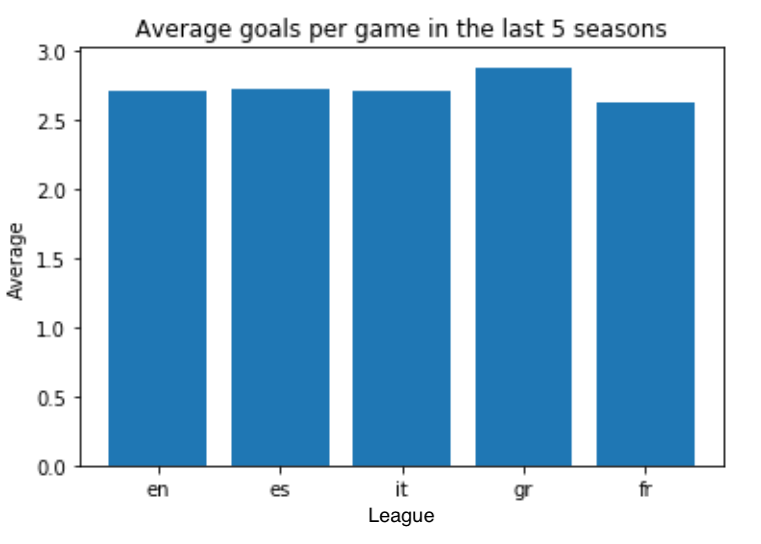
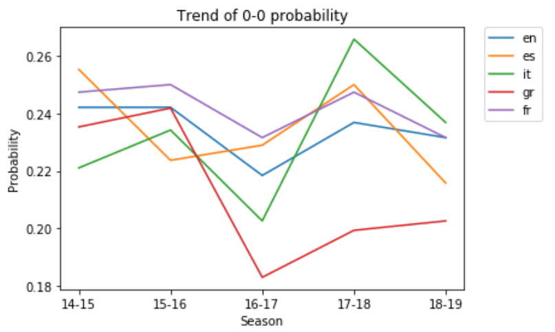
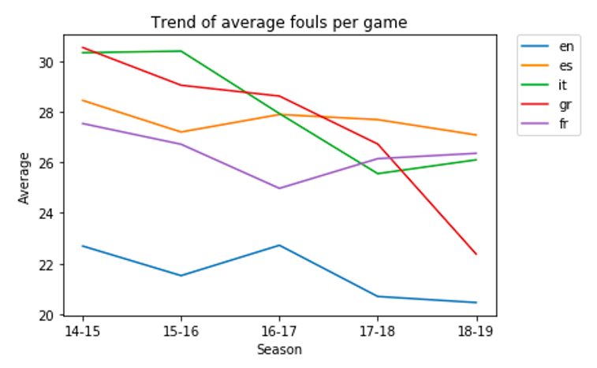

Football leagues comparison
Jan 2020 ~ Minor Course "Data Wrangling"
Length: 1w (at 1.0 FTE)
Programming language: Python (Pandas, NumPy, Matplotlib, RE)
Data: Every game in the last five seasons of the most popular leagues in Europe
(Premier League, LaLiga, Serie A, Bundesliga, Ligue A), containing the teams that played,
the result, the date, and many other variables, such as as the number of shots and the betting
odds
Problem description:
Acquire, explore, and wrangle data to compare the five most important football leagues in
Europe from two perspectives: watching and betting
Approach & Results:
Imported the data from Datahub.io and converted it to a Pandas dataframe. Explored the size of the
data, missing entries, and outliers. Compared the five leagues from two perspectives:
watching and betting. Regarding the first, the average number of goals per game was computed,
as well as the probability of a 0-0 match, the mean shots on target in no-goal games,
and the average number of fouls. Accordingly, it was concluded that Bundesliga is the most
exciting league to watch because it has the largest average of goals per game and the lowest
probability of a no-goal match to happen.



When it comes to gambling, two basic strategies were designed, namely betting €1 on the underdog
(greatest odd) for every game in the respective league and betting €1 on the largest odd of the
favorite at each game. Consequently, these gambling strategies did not lead
to any consistent gains among all the five leagues. Besides, the results indicated that the
French league should be avoided for the underdog betting strategy as it led to losses in all
the analyzed seasons.